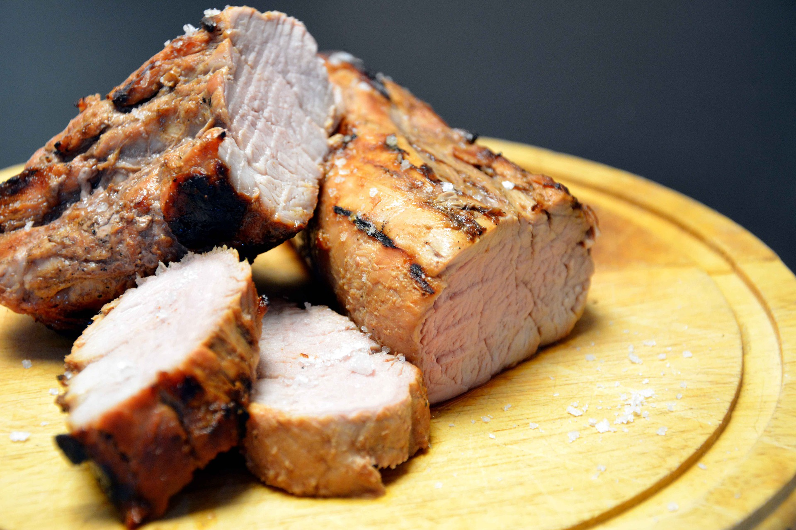

Balsamic Rosemary Pork Tenderloin with Potatoes and Pearl Onions

Description
Juicy pork tenderloin that's accompanied with baby gold yukon potatoes and pearl onions. Yum!
Ingredients
- 1 (1 lb) Piece of Pork Tenderloin
- 6 Baby Yukon Gold Potatoes, halved or quartered if very big
- 1 Cup of Frozen Pearl Onions, thawed
- 3 Tbsp of Balsamic Vinegar
- 2 Tbsp of Extra Virgin Olive Oil
- 3 Sprigs of Fresh Rosemary, picked off the stem
- 3 Cloves of Garlic, peeled and cut into slivers
- Salt and Pepper, to taste
Steps
Preheat your oven to 425 degrees and line a 9 by 13 pan with aluminum foil and drizzle
a little extra virgin olive oil to avoid the pork from sticking.
Lay the potatoes in one layer on a microwave safe dish and microwave for about 10 minutes
or until just about cooked thru.
Make little slits all over the pork tenderloin and stuff each one with a couple pieces of
rosemary and 1 sliver of the garlic. Season the outside well with salt and pepper and set
aside.
Preheat 1 Tbsp of extra virgin olive oil in a large non stick skillet over medium high heat.
Add the prepped pork tenderloin and sear on both sides until it’s brown and crusty. Remove
from the pan and place it on the foiled lined baking pan.
In a large bowl, add the partially cooked potatoes, pearl onions, 2 Tbsp of the balsamic
vinegar and remaining 1 Tbsp of extra virgin olive oil, remaining rosemary and season with
salt and pepper to taste and mix until everything is combined.
Add the potato mixture all around the pork tenderloin and roast for 25 to 35 minutes or
until the internal temperature of the thickest part of the pork reaches 150 degrees. Remove
the pork tenderloin to a plate and cover with aluminum foil. Put the potatoes back in wile
the pork is resting, about 10 minutes.
Once the pork has rested slice thinly and place it on a platter, arrange the roasted potatoes
and pearl onions around the pork loin and drizzle a touch of balsamic vinegar over the top
before serving.